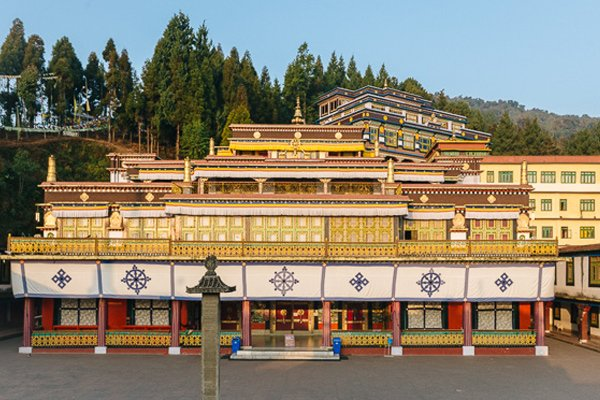
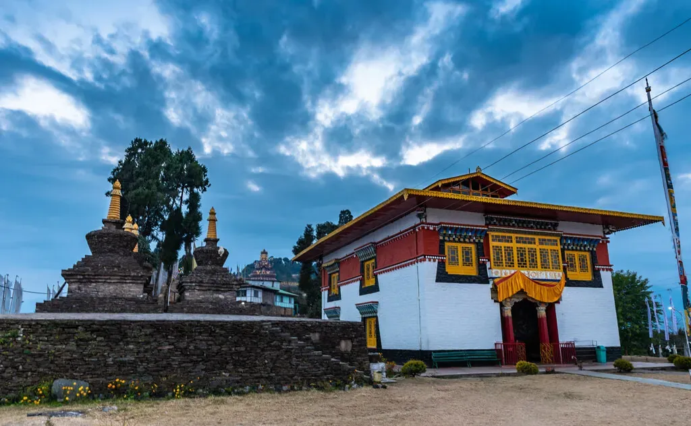
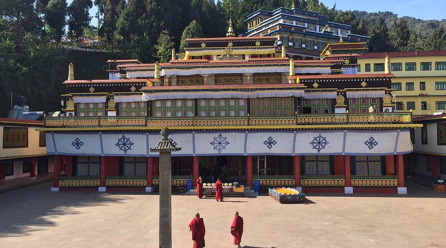
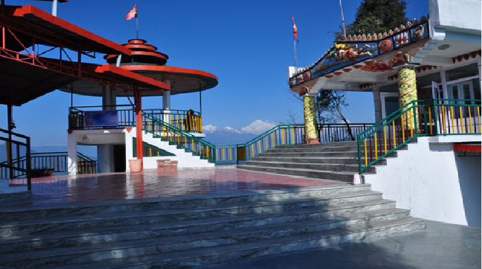

Temples and piligrimages in Sikkim
Rumtek Monastery

Rumtek Monastery is one of the most important Buddhist monasteries in India. It serves as the seat of the Karma Kagyu lineage and is known for its beautiful architecture and peaceful surroundings.
- Key Aspects of Rumtek Monastery:
- Religious Significance: Important center of Tibetan Buddhism.
- Architecture: Traditional monastery design.
- Location: Near Gangtok, Sikkim.
- Best Time to Visit: March to June and September to December.
- Click here for more information.
Tashiding Monastery

Tashiding Monastery is considered one of the holiest monasteries in Sikkim. It is located on a hilltop between the Rangit and Rathong rivers.
- Key Details:
- Religious Importance: Sacred Buddhist pilgrimage site.
- Festival: Bhumchu Festival.
- Location: West Sikkim.
- Best Time: February to June.
- Click here for details.
Enchey Monastery

Enchey Monastery is a 200-year-old monastery located near Gangtok. It is believed to be blessed by Lama Druptob Karpo, a tantric master.
- Key Information:
- Historical Importance: Over 200 years old.
- Festival: Chaam (mask dance festival).
- Location: Gangtok, Sikkim.
- Best Time: October to December.
- Click here for more information.
Kirateshwar Mahadev Temple
Kirateshwar Mahadev Temple is a famous Hindu temple dedicated to Lord Shiva. It is associated with the legend of Lord Shiva appearing in Kirat form.
- Key Aspects:
- Religious Significance: Dedicated to Lord Shiva.
- Festival: Maha Shivratri.
- Location: Legship, Sikkim.
- Best Time: October to May.
- Click here for details.
Hanuman Tok

Hanuman Tok is a famous temple dedicated to Lord Hanuman, located at a high altitude offering stunning views of the Kanchenjunga range.
- Key Details:
- Religious Significance: Dedicated to Lord Hanuman.
- Special Feature: Scenic mountain views.
- Location: Near Gangtok, Sikkim.
- Best Time: Throughout the year.
- Click here for more information.